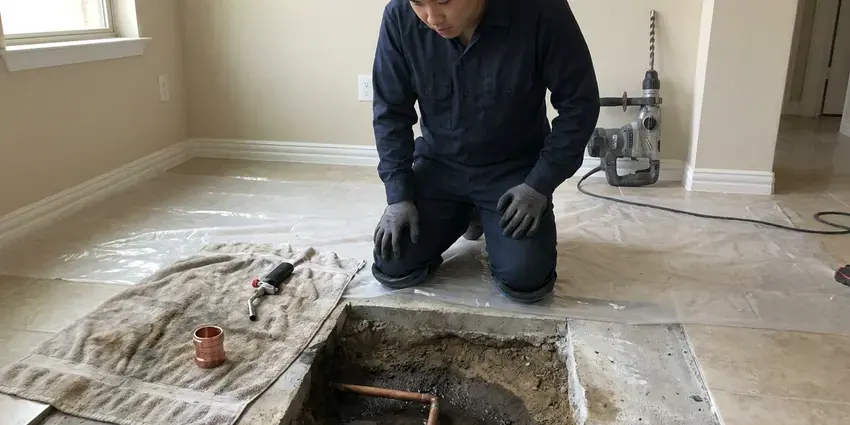

Tankless Water Heater Repair in Euclid, OH
Tankless unit throwing an error in Euclid, OH? HRL Plumbing reads the fault history, tests the sensor behind it and fixes the cause.
- All Major Tankless Brands
- Warranty Paperwork Handled
- Condensing Unit Repair
- Flow Sensor Replacement
Tankless Water Heater Repair in Euclid, OH, Done Properly.
Most tankless repairs take one to three hours.
Tankless Heater Not Firing in Euclid, OH? Read This.
HRL Plumbing repairs tankless water heaters across Euclid, OH, gas and electric, condensing and standard. Most calls start with an error code on the front panel. We pull the fault history from the service menu, test the sensor or igniter tied to that code, and check inlet gas pressure on a manometer with every burner lit. Then we fix what failed.
Our expertise includes:
- Reading error codes from the service menu
- Recirculation pump and schedule repair
- Vent run and intake clearance checks

Additional Plumbing Repair Services in Euclid, OH
We offer expert plumbing repair services across Euclid, OH to stop leaks, clear blockages, and keep every fixture working the way it should.


Customers
Why Choose HRL Plumbing for Tankless Water Heater Repair in Euclid, OH?
Tankless heaters are fussy about gas pressure. A unit rated at 199,000 BTU will starve on a half-inch line that fed the old tank, and it shows up as ignition faults at high flow. We put a manometer on it rather than guess.
- Scale Experts, We descale with a pump and service valves and suggest a softener or scale filter if it fits your water.
- Parts on Hand, We stock the sensors and igniters that fail most for the brands we see most.
- Licensed Pros, Gas work is done by licensed plumbers who handle the permit if one is needed.
Citywide Coverage
Commercial accounts in Euclid get the same coverage as homes, with early-morning slots so the kitchen is not short of hot water.
Experienced Team
Our plumbers work on tankless heaters every week, from simple scale lockouts to cracked heat exchangers. They carry manometers and multimeters and know how to pull fault history from the service menus on Navien and Rinnai units. Experience shows on intermittent faults.
Safety-First Approach
Inlet gas pressure is checked at full fire on every gas unit we service, because low pressure causes flame loss and rough ignition.
Trusted Certified Euclid Plumbing Services Professionals
At HRL Plumbing, we take pride in licensed, certified plumbing services throughout Euclid, OH. Credentials matter in this trade. Every repair, install and maintenance visit follows strict safety and quality rules, and the plumbers doing the work carry recognized industry credentials.
Call Us Now PHCC Plumbing Contractor Recognition
PHCC Plumbing Contractor Recognition Better Business Bureau (BBB) Accreditation
Better Business Bureau (BBB) Accreditation Angi Certified Pro
Angi Certified Pro ISO 9001 Quality Management Certification
ISO 9001 Quality Management CertificationTankless Water Heater Repair Done Right in Euclid, OH
Tankless Water Heater Descaling Service in Euclid
Scale is calcium and magnesium carbonate that drops out of hard water when it heats, and a tankless exchanger heats water fast through narrow passages. Private wells serve many rural homes, and iron, sulfur and hardness are frequent issues that call for filtration or softening. Our tech connects a pump to the isolation valves and runs descaler through the exchanger for close to an hour. Then we flush with clean water. The inlet screen gets cleaned too.

Navien Tankless Water Heater Repair in Euclid
Navien condensing units run a second stainless exchanger that pulls heat from the exhaust. That makes condensate, and a plugged trap or a full neutralizer will shut the heater down with a drain or flue error. On NPE-A models we also test the built-in recirculation pump, after clearing the trap and checking vent pitch. Then we fire it at low and high flow.
Tankless Error Code Diagnostics in Euclid, OH
Every tankless brand flashes its own codes, so a code 11 on one unit means something else on another. A Rinnai 11 is no ignition, a Navien E003 is ignition failure, and a Noritz 11 is also an ignition fault, but the tests behind them differ. We read the code, pull the history and test the part tied to it. Guessing gets expensive.
Gas Tankless Water Heater Repair in Euclid
Pressure at full fire matters on a gas tankless burner, not just when it first fires. We put a manometer on the inlet test port and run every hot tap in the house, because pressure that drops below the manufacturer's minimum under load causes flame loss and cold slugs. Then we check the exhaust. Codes come off when the numbers are right.
Igniter and Flame Rod Repair in Euclid, OH
Gas tankless heaters light with a hot surface or spark igniter, then prove flame with a flame rod. A rod coated in oxide reads low on a microamp meter and the board shuts the gas valve after a few seconds. We clean or replace the rod, check the igniter for cracks or weak spark, and confirm the gas valve opens on call. Five-minute fix sometimes.
Recirculation Pump Repair in Euclid
Recirculation cuts the wait for hot water at a far bathroom from a minute or more to a few seconds. When the pump fails or the check valve sticks, you get long waits again or lukewarm water in the cold line. We test the pump, check for a crossover valve under the far sink, and set the schedule so it runs around your mornings and evenings. Two settings, mostly.
Tankless Descaling and Flushing in Euclid
Rinnai shows an LC code and Navien posts a scale warning when the exchanger runs hot from mineral buildup. Resetting the code without a flush only buys a few days, because the scale is still in there. We connect a circulation pump to the service valves, run descaler through the exchanger for about an hour, then flush and clean the inlet screen. Yearly is right for most hard-water homes.

Navien Condensate & Fan Repair in Euclid
Navien's E016 is a heat exchanger overheat, and scale or a backed-up condensate line is usually behind it. We also read fan speed from the service menu and compare it to spec, since a fan that cannot reach target RPM will cause flame and exhaust faults on the same unit. Clean trap, clean screen, retest.
Tankless Water Heater Repair Near Me in Euclid, OH
Private wells serve many rural homes, and iron, sulfur and hardness are frequent issues that call for filtration or softening. We see how that scale treats each brand's heat exchanger, and we set descaling intervals around your water instead of a generic calendar. With a softener, two years between flushes is often fine.
Our trucks run all over Euclid, so most homes get a visit within a few hours. When you call, give us the brand and the code on the screen, and the tech can bring the likely part instead of making a second trip across town. Saves a day sometimes.
HRL Plumbing at a Glance
- Fully licensed plumbing team covering Euclid, OH
- 24/7 emergency service with same-day scheduling
- Upfront, flat-rate pricing before work begins
- 4.9-star rated by 673+ Ohio customers
Euclid Map
Euclid Information
- Population
- 48,212
- Area codes
- 216/440/330
- Service area
- Euclid and communities within 40 miles
- Nearby
- Cleveland, Mentor, Lakewood, Parma
Private wells serve many rural homes, and iron, sulfur and hardness are frequent issues that call for filtration or softening. A tankless unit on hard water needs descaling about once a year. Skip it and the scale code shows up first, then the overheat lockouts.
Talk to a Plumber
Call HRL Plumbing for honest, reliable plumbing from people who know the trade in Euclid, OH.
Our Specialized Plumbing Services in Euclid, OH
At HRL Plumbing, you get every kind of plumbing service from one company across Euclid, OH. We go from leak detection all the way to full system installations, for homes and commercial buildings, and we do it quickly at a fair price. Here are the core services we offer:


Our Tankless Repair Process in Euclid, OH
We test before we replace, and here is what that looks like.
Call and Book
Call (740) 449-7505 and describe what the heater is doing. We book a time to visit your Euclid home.
Diagnose
The tech reads the fault history and tests the suspect part, then explains the problem in plain terms.
Repair
The failed part gets replaced and the unit is test fired at low and high flow before we leave.
Frequently Asked Questions About Tankless Water Heater Repair in Euclid
Descaling usually runs $175 to $350. Part repairs mostly fall between $175 and $600, and a heat exchanger replacement can top $800 when the warranty has run out. The quote comes before the wrench.
Low flow at a single fixture, a dirty inlet filter, a failing flow sensor or scale can all cause swings. A crossed hot and cold line at a single-handle faucet can do it too, and that one is not the heater at all.
Once a year on hard water without a softener. Homes with a softener can usually wait two years, though we still like to open the unit annually to clean the inlet screen and check the flame rod. Very hard water may need it twice a year.
Our labor warranty appears on the invoice, and factory parts carry the manufacturer's own coverage on top of it. Ask for the terms before we start and we will spell them out.
Descale yearly on hard water and clean the inlet screen every few months. A softener or scale-reduction cartridge ahead of the heater slows scale a lot, and keeping the intake clear of leaves and lint heads off combustion faults. Check the vent cap after storms.
We service Rinnai, Navien, Noritz, Rheem, Bosch and AO Smith gas units, along with electric models from Stiebel Eltron and EcoSmart. Parts for discontinued brands take longer to find.
You can clean the inlet water filter and the air intake screen on most models by following the owner's manual. Gas valves, igniters and anything behind the sealed combustion cover should go to a licensed plumber, and DIY work there can void the manufacturer warranty. Leave the burner alone.
Most take one to three hours on site. Descaling alone is closer to an hour and a half, while a part that has to be ordered, like a control board, usually means a second visit within a few business days. We tell you which before we leave.
What Our Customers Say About Our Plumbing Experts

Brian W.
I smelled gas behind the dryer and called right away. The plumber found a corroded flex connector, replaced it, and pressure tested the whole line before turning the gas back on. He let me watch the gauge hold steady for fifteen minutes.
Gas Line Repair · Mentor, OH
Sofia M.
Two new toilets went in during one visit. The tech set them on new wax rings and swapped the old supply lines. He also noticed our bathroom faucet dripping and replaced the cartridge while he was there. No mess left behind.
Toilet Installation · Cleveland, OHMark T.
The floor drain in our office break room backed up every few weeks. The plumber ran a cable, then put a camera down and found roots at a joint about thirty feet out. Seeing it on the screen made the decision easy.
Drain Cleaning · Mentor, OH
James P.
Our restaurant had a slow leak at the hand sink that was rotting the cabinet base. HRL Plumbing came in at six in the morning before prep, replaced the trap and both supply lines, and was packed up before my first cook clocked in.
Commercial Plumbing · Lakewood, OHPaul B.
Our pit pump ran nonstop even in dry weather. The plumber found the check valve was stuck open, so the same water kept cycling back into the pit. New valve, new float switch, done in an hour. It runs quiet now.
Sump Pump · Cuyahoga Falls, OH
Angela D.
Our sump pump quit during a storm and the water was an inch from the basement carpet. HRL Plumbing put in a new pump with a battery backup that same evening. We have had two heavy rains since. It kicked on both times.
Sump Pump · Euclid, OH